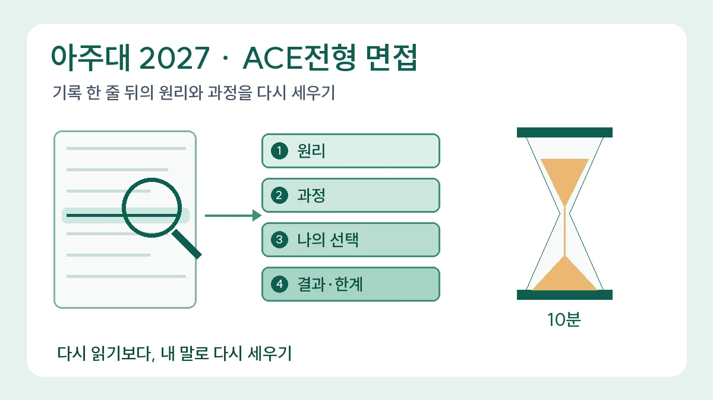

아주대 2027 ACE 면접, ‘서류신뢰도 80%’는 학생부를 외웠는지 보는 걸까?
아주대 2027 ACE전형(의학과 제외) 면접의 공개된 방식(2인 이상 면접관·10분 내외·학생부 기반 개별 질문)과 서류신뢰도 80%·의사소통능력 20% 평가항목, 11월 17일 16시 1단계 발표부터 모집단위별 22·28·29일 면접까지의 일정을 모집요강 기준으로 정리하고, 기록 한 줄을 원리·과정·나의 선택·결과와 한계로 다시 세우는 복기 방법을 교육용 가상 사례로 제안합니다.

아주대학교 2027학년도 학생부종합 ACE전형 1단계 합격자(의학과·약학과는 별도 일정)를 위한 면접 준비 안내입니다. 면접 방식과 평가항목은 2026년 5월 29일 수정 공고된 2027학년도 수시모집요강에 이미 공개된 내용이며, 오늘 새로 발표된 소식이 아닙니다.[1][2] 입학처 안내 화면에는 1단계 합격자 발표가 2026년 11월 17일(화) 16:00로 표시돼 있고, 이 글은 그 발표 전에 썼습니다.[3] 2027학년도는 2026년 입시 시즌에 준비하는 전형이며, 2028학년도 자료를 대신 적용하지 않습니다.
“서류신뢰도가 80%라는데, 학생부를 통째로 외워 가야 하나요?” 아주대 모집요강은 ACE전형(의학과 제외) 면접을 개인면접을 통해 서류신뢰도와 의사소통능력을 종합적으로 평가하는 면접으로 소개합니다.[1] 이 글은 예상 질문 목록이 아니라, 기록 한 줄 뒤에 있는 원리와 과정을 내 말로 다시 세우는 복기 방법을 다룹니다. 앞선 인하대 해설이 팀 탐구에서 내 역할을 가려내는 문제였고 숙명여대 해설이 질문 방향에 맞춰 첫 문장을 고르는 문제였다면, 이번에는 “그 실험은 어떤 원리로, 어떤 과정을 거쳤나요?”라는 확인 질문에 답할 재료를 준비하는 문제입니다.
무엇이 공개돼 있나: 10분 내외, 학생부 기반 확인 면접
모집요강은 ACE전형(의학과 제외) 면접을 2인 이상의 면접관이 지원자 1인을 평가하는 방식, 지원자 1인당 10분 내외로 안내하고, 지원자의 학교생활기록부를 바탕으로 개별 면접질문을 도출한다고 밝힙니다.[1] 학생부종합전형 평가 안내에서는 서류 기반 면접을 학생이 제출한 서류를 기반으로 학생의 경험을 확인하기 위한 면접으로 설명합니다.[1]
- 서류 신뢰도(학업역량, 진로역량, 공동체역량) 80%: 서류 기반에 따른 진위여부 확인과 교내 활동과정, 노력과 결과, 성취 등을 봅니다.[1]
- 의사소통능력, 태도 20%: 질문에 대한 이해 및 논리적 답변, 면접 태도를 봅니다.[1] 평가 안내 표는 이를 면접관의 질문에 대해 이해하고 있는가, 바른 면접 태도로 체계적으로 답변하는가로 풀어 씁니다.[1]
모집요강의 서류 기반 면접 질문 예시에는 “○○교과에서 ○○실험을 진행했는데, 이 실험의 원리와 과정에 대해 설명해 주세요.”, “○○동아리에서 신문을 제작한 경험이 있는데, 본인의 구체적 역할에 대해 설명해 주세요.” 같은 문장이 실려 있습니다.[1] 이는 질문의 형식을 보여 주는 예시이며, 같은 질문이 나온다는 보장은 아닙니다.
적용 범위: 어떤 지원자에게 해당하나
대상은 2027학년도 ACE전형 1단계 합격자입니다. ACE전형은 1단계 서류평가 100%로 3배수를 선발하고, 2단계에서 1단계 성적 70%와 면접평가 30%를 합산합니다.[1] 모집요강의 면접 평가 모형은 ‘학생부종합전형 전체(의학과 제외)’에 같은 표를 적용하므로, 11월 21일에 면접을 보는 첨단융합인재전형 등 다른 학생부종합 면접 지원자도 아래 복기 방법을 함께 쓸 수 있습니다. 다만 전형마다 일정과 세부 조건이 다르니 해당 전형 쪽 요강을 따로 확인하세요.
의학과는 방식이 다릅니다. 의학과 면접은 지원자의 제출서류를 바탕으로 한 면접(10분), 윤리의식 등 인성을 확인하기 위한 제시문 활용 면접(10분)으로 구성됩니다.[1] 약학과는 의학과와 같은 날짜 일정을 따르지만, 요강의 면접 방식 구분은 ‘의학과 제외’ 쪽에 들어 있으므로 서류 기반 면접 기준을 확인하면 됩니다. 이 글은 의학과 제시문 면접을 다루지 않습니다.
모집요강은 평가 결과 과락에 해당하는 성적을 부여받을 경우 예비번호를 부여하지 않고 불합격 처리할 수 있다고 적고 있습니다.[1] 과락 기준 점수는 공개되지 않았으므로, 이 글은 몇 점이 위험한지 추정하지 않습니다. 면접 비율 30%가 합격에 미치는 영향도 단정하지 않습니다.
일정: 발표 시각, 모집단위별 면접일, 무작위 배정
- 1단계 합격자 발표: 모집요강에는 2026년 11월 17일(화)로, 입학처 안내 화면에는 [1차] 2026.11.17.(화) 16:00으로 표시돼 있습니다.[1][3] 의학과·약학과는 2026.12.12.(토)에 발표합니다.[1]
- ACE전형 면접일: 공과대학·첨단ICT융합대학은 11월 22일(일), 소프트웨어융합대학·자연과학대학·간호대학은 11월 28일(토), 경영대학·인문대학·사회과학대학은 11월 29일(일)입니다.[1] 의학과·약학과는 12월 14일(월)입니다.[1]
- 면접 시각: 블라인드평가로 진행하므로 1단계 합격자의 면접시간과 순서는 무작위로 배정되며 변경할 수 없습니다.[1] 면접 세부사항은 1단계 합격자 발표 때 입학처 홈페이지에 공지됩니다.[1]
- 최초합격자 발표: 2026년 12월 18일(금)입니다.[1]
공과대학·첨단ICT융합대학 합격자는 발표일부터 면접일까지 닷새뿐이고, 그 사이에 수능(11월 19일)이 끼어 있습니다. 개인별 시각은 발표와 함께 나오는 공지에서만 알 수 있으므로, 같은 주말 다른 대학 면접과 겹치는지 발표 당일 바로 확인하는 편이 안전합니다.
탐구보고서·세특과의 관계: ‘확인’은 다시 읽기가 아니라 다시 세우기
평가내용의 ‘진위여부 확인’과 ‘교내 활동과정, 노력과 결과, 성취’는 세특에 적힌 탐구 한 줄과 직접 이어집니다.[1] 학생부 문장은 결과를 한두 줄로 압축해 적기 때문에, 그 문장을 그대로 다시 읽는 답변은 기록 이상의 정보를 주지 못합니다. 반대로 기록에 없는 과정을 그럴듯하게 덧붙이면 꼬리질문에서 설명이 이어지지 않을 수 있습니다. 대학은 채점 기준의 세부 내용을 공개하지 않았으므로, 아래 네 칸은 편집팀이 만든 복기용 틀이며 대학이 정한 답변 형식이 아닙니다.
- 원리: 이 활동이 기대고 있는 개념이나 규칙을 한 문장으로 적습니다. 교과서 용어를 쓰되, 내 말로 바꿔 말할 수 있어야 합니다.
- 과정: 실제로 한 단계를 순서대로 적고, 단계마다 무엇을 같게 두고 무엇을 바꿨는지 표시합니다.
- 나의 선택: 방법·자료·조건을 정할 때 내가 내린 판단과 그 이유를 적습니다. 팀 활동이었다면 내 몫을 따로 표시합니다.
- 결과와 한계: 기억하는 숫자나 관찰을 적고, 그 결과로 말할 수 있는 범위와 말할 수 없는 범위를 나눕니다.
인문·사회 모집단위라면 ‘원리’ 칸에 활동이 기댄 이론이나 개념, ‘과정’ 칸에 자료를 고르고 분석한 순서를 넣으면 같은 틀로 쓸 수 있습니다. 네 칸 가운데 비어 있는 칸이 있다면, 그 부분은 학생부를 다시 읽기보다 당시 보고서·수업 자료·메모를 찾아 확인하는 것이 먼저입니다. 기억나지 않는 부분은 지어내지 말고 “그 부분은 정확히 기억나지 않는다”고 구분해 말할 수 있도록 준비해 두세요.
교육용 가상 사례: 원리와 과정을 묻는 질문
다음은 편집팀이 만든 교육용 가상 사례입니다. 실제 학생부·면접 후기나 아주대의 실제 출제 문항을 옮긴 것이 아니며, 실제로 수행된 실험이라는 뜻도 아닙니다. 수치도 계산 연습을 위해 지어낸 값입니다.
가상 기록 문장
화학 수업에서 염산의 농도를 달리하여 대리석 조각과 반응시키고, 일정 시간 동안 감소한 질량을 비교하여 농도와 반응 속도의 관계를 발표함.
가상 질문
이 실험의 원리와 과정에 대해 설명해 주세요.
기록을 다시 읽은 답변
염산의 농도를 다르게 해서 대리석과 반응시키고 질량 변화를 비교했습니다. 농도가 높을수록 반응 속도가 빠르다는 것을 확인했고, 반응 속도에 영향을 주는 요인을 이해할 수 있었습니다.
이 답변은 틀린 곳이 없지만 학생부 문장과 거의 같습니다. 왜 질량이 줄어드는지, 무엇을 같게 두었는지, 결과가 어느 정도였는지가 빠져 있어서 확인 질문에 필요한 정보가 늘지 않습니다.
네 칸으로 다시 세운 답변 — 가상 설정에서 가능한 설명
대리석의 주성분인 탄산칼슘이 염산과 반응하면 이산화탄소 기체가 빠져나가서, 그만큼 전체 질량이 줄어듭니다. 그래서 줄어든 질량을 반응이 얼마나 진행됐는지의 지표로 썼습니다. 염산은 0.5 M과 1.0 M 두 가지를 50 mL씩 준비했고, 대리석 조각은 2.00 g씩 쟀고, 온도는 실온으로 같게 두었습니다. 가상의 기록으로 설명하면 120초 동안 0.5 M에서는 0.18 g, 1.0 M에서는 0.40 g이 줄어서 평균 속도가 초당 약 0.0015 g과 0.0033 g으로 약 2.2배 차이가 났습니다. 저는 질량 측정을 맡았는데, 거품과 함께 용액이 튀어 나가면 질량이 더 줄어 보일 수 있어서 비커 입구를 솜으로 느슨하게 막자고 제안했습니다. 다만 조각마다 표면적이 달랐고 농도별로 한 번씩만 측정했기 때문에, 이 배율을 일반적인 관계로 말할 수는 없다고 발표에서 함께 밝혔습니다.
첫 두 문장이 원리, 다음 문장이 과정과 같게 둔 조건, 숫자 문장이 결과, ‘저는’으로 시작하는 문장이 나의 선택, 마지막 문장이 한계입니다. 이렇게 준비해 두면 “왜 질량을 쟀나요?”, “표면적은 왜 문제가 되나요?” 같은 꼬리질문이 이어져도 이미 정리한 칸에서 답을 꺼낼 수 있습니다. 위 속도는 0.18 g과 0.40 g을 각각 120초로 나눈 값이고, 배율은 0.40을 0.18로 나눈 값(약 2.22)입니다. 가상 조건에서 대리석 2.00 g(약 0.02 mol)과 각 염산의 양으로 생길 수 있는 이산화탄소의 최대 질량(약 0.55 g, 0.88 g)이 감소량보다 크다는 점도 함께 계산해 확인했습니다.
지금 할 일
- 11월 17일(화) 16:00 이후: 1단계 결과와 함께 올라오는 면접 세부사항 공지를 확인하고, 무작위로 배정된 면접 시각을 저장하세요.[1][3]
- 모집단위별 면접일 확인: 공과대학·첨단ICT융합대학은 11월 22일, 소프트웨어융합대학·자연과학대학·간호대학은 11월 28일, 경영대학·인문대학·사회과학대학은 11월 29일입니다. 시각은 바꿀 수 없으므로 다른 대학 일정과 겹치는지 먼저 점검하세요.[1]
- 면접 전까지: 세특·창체에서 탐구나 활동 기록을 서너 개 고르고, 줄마다 위 네 칸을 채워 보세요. 빈칸이 생긴 기록은 당시 보고서나 메모로 확인하고, 확인할 수 없는 내용은 답변에 넣지 않습니다. 10분 모의면접을 녹음했다면 답마다 ‘학생부 문장에 없던 정보가 하나라도 더해졌는가’를 따로 표시해 보세요. 이 방식은 편집팀의 연습 제안입니다.
- 당일: 교복·군복처럼 소속과 신분을 나타내는 복장은 입을 수 없습니다.[1] 면접 진행 절차 안내에 따라 신분증과 수험표를 준비하고, 답변에서 이름·수험번호·출신고교명과 부모(친인척 포함)의 신상정보를 언급하지 않도록 주의하세요.[1]
불확실성과 다음 확인 시점
이번 확인은 입학처 2027학년도 수시 모집요강 수정 공고(2026년 5월 29일)에 첨부된 모집요강 PDF와 입학처 안내 화면에 한정됩니다.[1][2][3] 수정 공고에서 확인되는 변경사항은 인천광역시 행정체제 개편 사항 반영(지역의사선발전형)이며, ACE전형 면접 방식에 관한 내용은 아닙니다.[2] 2026년 11월 17일 오전 현재 입학처 수시 공지사항 목록에서 ACE전형 면접 방식에 관한 별도 공지는 확인되지 않았습니다. 1단계 발표와 함께 올라오는 면접 세부사항 공지가 당일 운영의 최종 기준입니다.[1]
‘서류신뢰도’가 평가항목에 적혀 있다는 사실만으로 특정 질문이 나온다거나 특정 답변 방식이 더 높은 점수를 받는다고 단정할 수 없습니다. 이 글의 네 칸 틀과 가상 사례는 연습 도구일 뿐 실제 질문이나 점수·합격을 예측하지 않으며, 다른 대학·전형에는 해당 공식 자료를 다시 확인해야 합니다.
관련 기존 가이드
- 학생부 기반 면접 준비 가이드 — 학생부 전체를 복기하는 기본 틀로 사용하세요.
- 학생부 면접 꼬리질문 가이드 — 네 칸을 채운 뒤 이어질 질문을 점검할 때 함께 보세요.
- 인하대 2027 팀 탐구 역할 해설 — ‘나의 선택’ 칸에서 팀 활동의 내 몫을 가려낼 때 참고하세요.
- 숙명여대 2027 질문 의도 해설 — 준비한 재료를 질문 방향에 맞춰 첫 문장으로 꺼내는 연습에 활용하세요.
공식 출처와 확인 범위
- [1] 아주대학교 2027학년도 수시모집요강(수정 공고, PDF)
- [2] 아주대학교 입학처, 2027학년도 수시 모집요강 수정 공고(2026.05.29 게시)
- [3] 아주대학교 입학처 안내 화면, 2027학년도 수시모집 1단계 합격자 발표 일정(2026.11.17 확인)
모집요강은 PDF 3쪽(책자 1쪽)의 전형요약, PDF 11~13쪽(책자 9~11쪽)의 ACE전형 전형방법·면접평가·평가항목·전형일정, PDF 54~55쪽(책자 52~53쪽)의 면접평가 안내·면접 진행 절차·면접 질문 예시를 확인했습니다. 1단계 발표 시각은 입학처 안내 화면에서 2026년 11월 17일 오전에 확인한 표시입니다. 공식 문항·도표·PDF는 재게시하지 않았고 복기 틀·가상 사례·일러스트는 독립적으로 작성했습니다.
이 칼럼은 운영자의 관점과 일반 교육 정보를 담고 있으며 특정 대학 합격이나 평가 결과를 보장하지 않습니다.
함께 볼 글

학생부 기반 면접 준비: 영역별 활동 복기와 꼬리질문·STAR·PREPNEW
세특·창체·공동체 활동을 동기·과정·결과·성찰로 정리하고 실제 기여와 한계를 설명하는 서류 기반 면접 연습법입니다.

학생부 기반 면접, 탐침질문에 흔들리지 않는 답변법: 동기·과정·결과·성찰로 설명하기NEW
학생부에 적힌 탐구와 활동을 단순 암기가 아닌 자신의 경험으로 설명하기 위해, 동기·과정·결과·성찰의 네 단계와 탐침질문 대응법을 안내합니다.

학생부 기반 대입 면접 꼬리질문 점검표: 주장·근거·한계 연결하기NEW
보고서의 핵심 주장에 조건과 반대 질문을 붙여, 근거를 찾을 수 있는 답변과 아직 확인하지 못한 답변을 구분합니다.